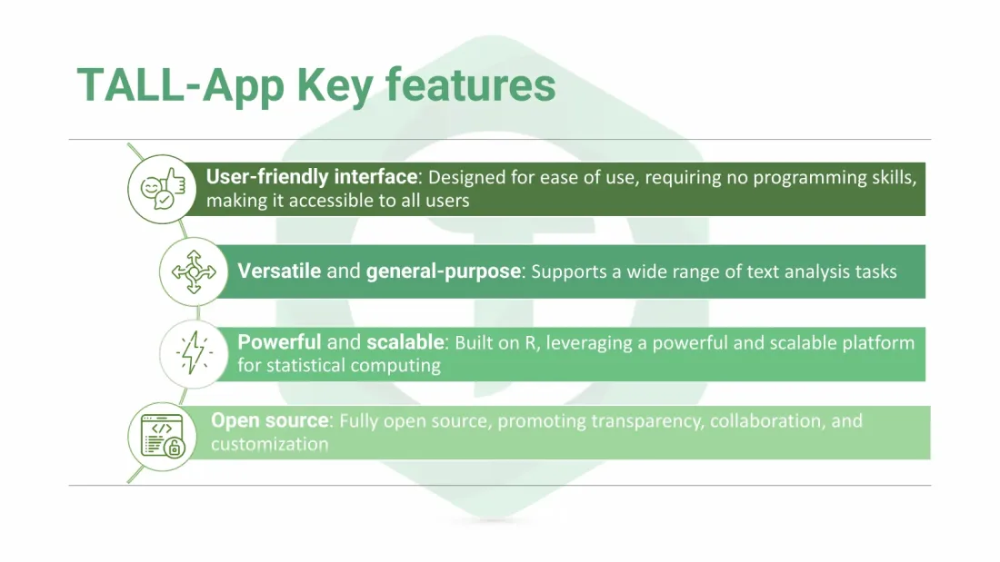
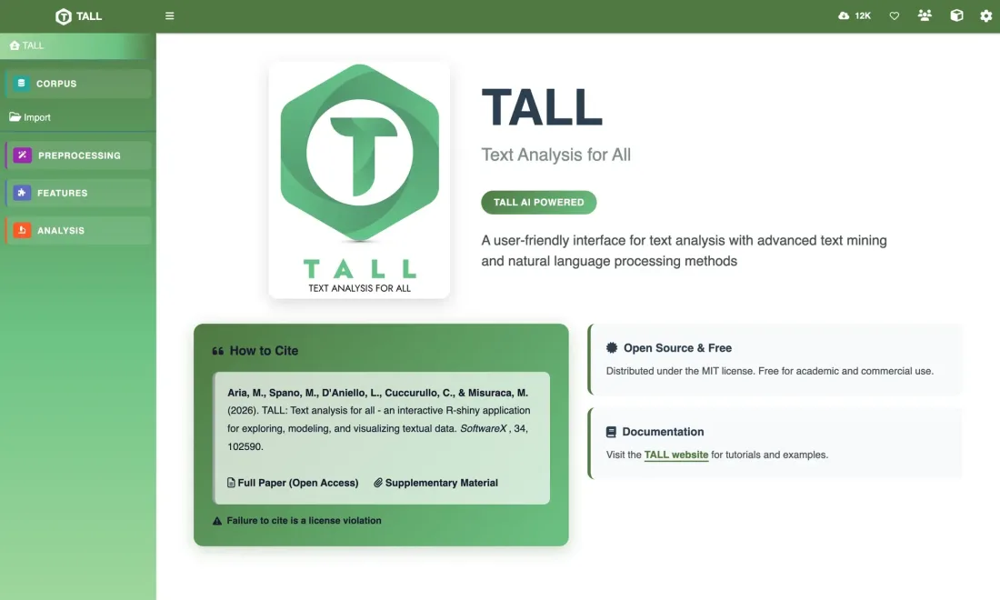
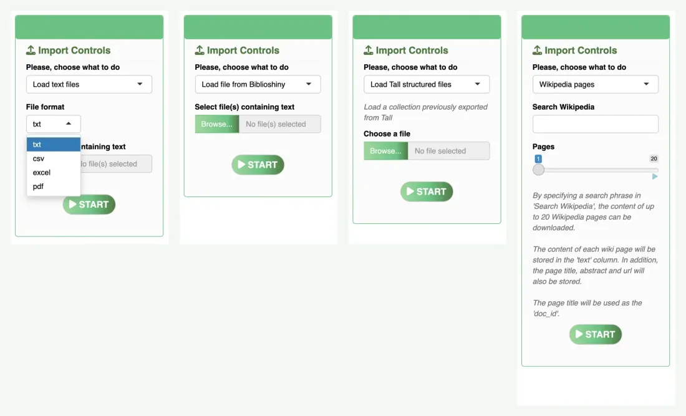
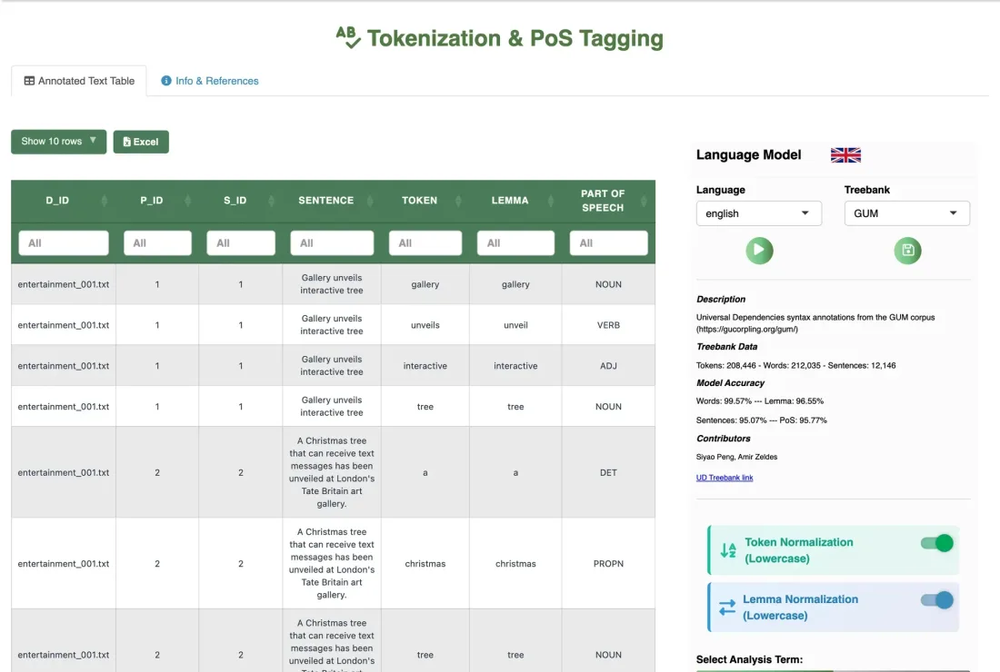
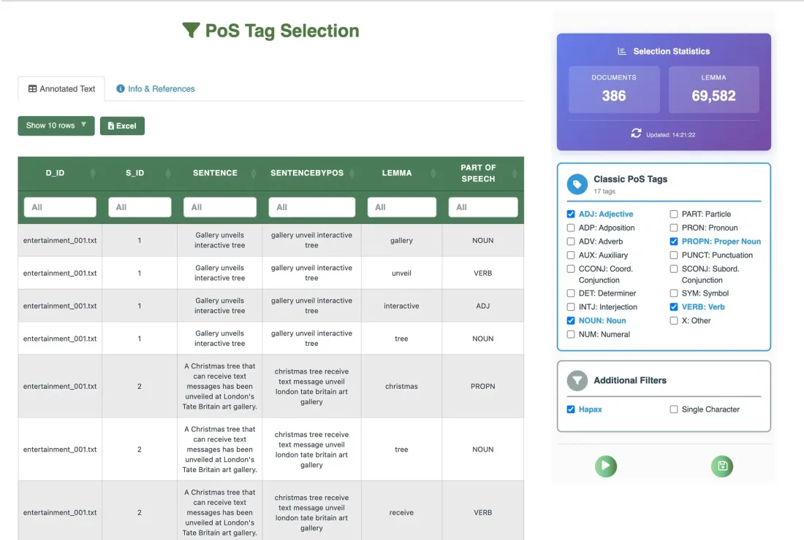
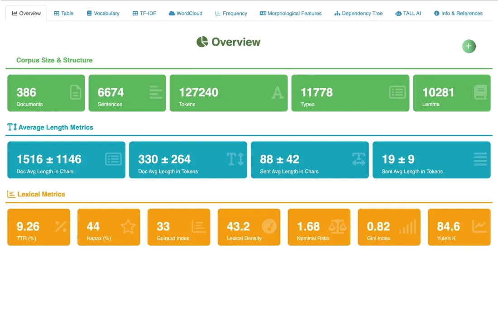
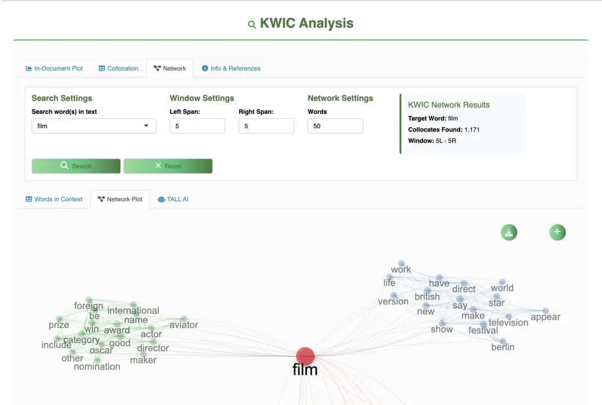
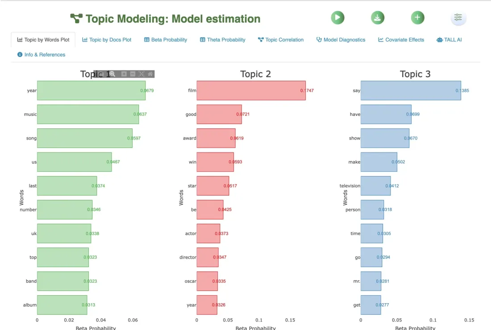
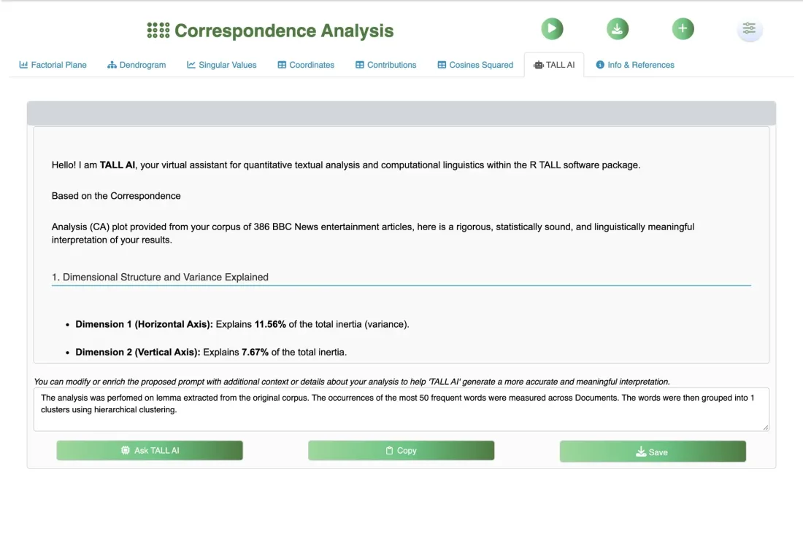

00
Introduction
What TALL is, its key features, the end-to-end workflow, the architecture and how to install the package.
Start chapter119 annotated screens and slides walk through every module, from installation to TALL AI. Each step explains what the page does and how to read its output, on real examples from the sample collections shipped with the package.
Runs in your browser · searchable · keyboard navigation (← →) · every step has its own link

The chapters follow the TALL menu. Each link opens the tutorial at that step; the number is the step in the tutorial.

What TALL is, its key features, the end-to-end workflow, the architecture and how to install the package.
Start chapter
The interface, the Settings panel, the buttons you will meet on every page, and the ideas behind the vector space model and text pre-processing.
Start chapter
Four ways to build a corpus — text files, Biblioshiny exports, saved .tall projects, Wikipedia — then split, sample and enrich it with metadata.
Start chapter
Tokenization, lemmatization and PoS tagging with UD 2.15 models, special entities, multi-word expressions, custom PoS lists and synonyms.

Filter and group documents by their metadata, assign time, label and keyness roles, and choose the parts of speech that enter the analyses.
Start chapter
Corpus size and lexical metrics, vocabulary and TF-IDF, wordclouds, frequencies by PoS, morphological features and the dependency tree viewer.
Start chapter
Keyness, keywords in context, correspondence analysis, Reinert clustering, co-occurrence networks, thematic maps, word embeddings and SVO triplets.

Syntactic complexity, topic models (LDA, CTM, STM), supervised classification, polarity and emotion detection, extractive and abstractive summaries.

TALL AI interprets plots and tables with Google Gemini; the report collects the results of every page into a single Excel workbook.
Start chapterThe examples use corpora bundled with TALL, so you can reproduce every step: in Import, choose a sample collection instead of your own files.
Short news stories from the entertainment section of the BBC News website, in English. Used for most of the lexical and document analyses.
Abstracts of articles that used the bibliometrix R package for literature reviews, with metadata (authors, year, journal, open access). Already tokenized and PoS‑tagged.
Tweets about US airlines, rich in mentions, hashtags and emojis: the reference example for special entities.